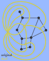

Definitions: Molecules and Graphs
CaGe is a mathematical software package that is intended to be a service to chemists as well as mathematicians. As the program deals with graphs on the mathematics side and molecules on the chemistry side, let us explain how the two concepts translate into each other. We will begin by introducing some simple terminology.
Molecules
Molecules are, for the purposes of this program, collections of atoms linked by bonds to form fixed structures (not changing with time). CaGe's generators enumerate sets of molecules -- or to be exact graphs that are models for molecules -- that share certain properties given by the user, e.g. the same constituional formula and probably some additional properties.
But all molecules that are generated differ in structure -- they are pairwise non-isomorphic. Reflecting, rotating or scaling a molecule or changing some bond angles or lengths does not count as a structural difference. The "properties" that can be chosen to be shared by a generated set of molecules depend on what type of molecules are to be generated and differ from generator to generator.
Graphs (embeddings, dual graphs)
Graphs are very simple mathematical objects. They consist of vertices (or nodes) and edges (or connections). If two vertices are connected by an edge they are said to be adjacent. Actually, the term "adjacent" can be applied to any pair of graph constituents -- any combination of two vertices, edges, or faces (see below) -- if they are "next to" each other.
The number of edges starting at a vertex (or the number of adjacent vertices) is the valency or degree of that vertex. A node with valency n is said to be n-valent. A graph is called n-regular if every vertex is n-valent. Some of our generators specialize in producing regular graphs.
At this level, a graph represents the information that chemists sometimes call the connection table of a molecule. For a visual representation, we also need to assign (2D or 3D) coordinates to our vertices, this is known as an embedding of the graph (into 2D or 3D space). The edges are then drawn as arbitrary curves between the vertices (straight line segments are preferred, but not required). A graph with an embedding is sometimes called a map.
When a graph is to be drawn on paper, it is desirable to draw the edges so that they don't cross each other. If this is possible (the graph has a 2D embedding that permits intersection-free edge drawing), the graph is said to be planar. (Note that the term "planar" exists in chemistry as well, but with a different meaning.) The condition of planarity is fulfilled for all the molecule types that we currently generate. Looking at a drawing of a graph with more or less straight edges, you will perceive faces as well as edges and vertices. A face is a 2D region bounded by some of the graph's edges. (Don't forget the one face defined by the "outside" of the graph.) Depending on the number of edges bounding it, a face can be a triangle, quadrangle, pentagon, hexagon, and so on. The number of bounding edges is the face's size. (If you must travel along some edge twice when going around a face, that edge counts twice.)
Picture a planar graph with its vertices, edges and
faces. You can then obtain a new graph, the dual of the original
graph, as follows: First create a new (dual) vertex in the interior of
each face of the original graph. For each original edge, find the faces
bounded by that edge and connect the dual vertices inside them by a new
(dual) edge, crossing the original one. (You may have the same original
face on both sides of the edge; this will create a "loop" edge,
starting and ending at the same dual vertex. You may also find two faces
having more than one edge in common; the dual will then have two edges
starting and ending at the same vertices, such a graph is called a "multi-graph".
Our embedders will not handle loop edges or multi-graphs, and CaGe will
not allow our generators to produce them, not even as duals.)
Dualizing exchanges vertex degree and face size: The degree of
each dual vertex is clearly equal to the size of the corresponding original
face: each edge bounding the original face creates a dual edge starting
at the dual vertex. Likewise, a dual face's size is equal to the degree
of the corresponding original vertex: observe how the dual graph's faces
form around the original vertices, bounded by those dual edges that cross
the original edges starting at the original vertex. The number of edges
remains unchanged. (This follows directly from the way a dual graph
is defined.)
Constructing the dual of the dual graph gives you back the original graph.
(Vertex positions will probably have shifted, but that only changes the
embedding, not the graph.)
A graph is called k-(vertex)-connected if one must remove at least k vertices in order to separate the graph into disconnected parts. If k vertices are also "enough" to separate the graph (there is some set of k vertices that, when removed, achieves the separation), we say the graph is exactly k-connected. The number k is then called the connectivity of the graph. (Removing a vertex implies removing all edges adjacent to it.)
Translating Molecules into Graphs
An atom in chemistry is represented by a vertex in graph theory. A bond between two atoms is represented by an edge. We represent a double or triple bond by a single edge (multi-graphs are not allowed), and there is no extra information attached to edges. Therefore, bond order (whether a bond is single, double, or triple) is not represented in our graphs.
As a consequence, an atom's chemical valency might not be equal to the "graph valency" (or degree) of the corresponding vertex. For example, the degree of a carbon atom might be less than 4, since double bonds are only counted once. We do however use the degree of a vertex to find the corresponding atom's type (we also need to use our knowledge of the kind of molecule we are generating, which narrows down the choice of atom types to just one or two for most generators).

| Welcome |
||